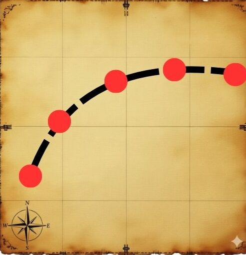
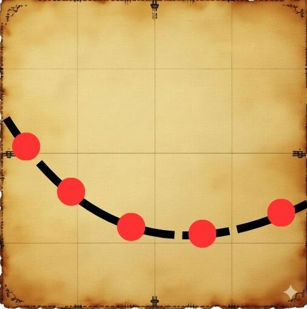
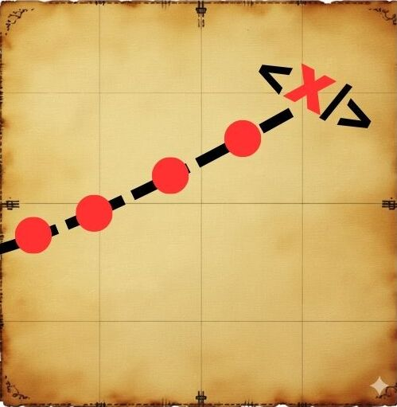

Bem-vindo ao MapaDev!
Seu guia definitivo para navegar no universo do desenvolvimento web, desde os fundamentos até os tópicos mais avançados.

Quem está construindo o MapaDev?


Conheça o MapaDev
O MapaDev é um repositório de conteúdo pensado para
organizar a jornada de estudos em desenvolvimento web.
A ideia é simples: centralizar os tópicos essenciais em um único lugar,
oferecendo um caminho lógico para quem quer aprender a programar para a web,
desde a primeira linha de HTML até a complexidade da arquitetura em nuvem.
Nosso objetivo é transformar um desafio de sala de aula em um recurso valioso para a comunidade.

Como usar o site?
Navegar pelo MapaDev é intuitivo. Organizamos todo o conteúdo em três grandes trilhas de conhecimento.

Iniciante
Comece sua jornada no mapa do desenvolvimento web. Descubra os primeiros marcos com HTML, CSS e lógica básica, e prepare o terreno para conquistar novos horizontes.

Intermediário
Avance por rotas mais desafiadoras, dominando boas práticas e frameworks. Aprimore suas técnicas e torne seus projetos mais organizados, criativos e consistentes.

Avançado
Alcance o tesouro do conhecimento explorando grandes desafios da jornada. Domine arquitetura, performance, testes e deploy, e consolide sua experiência como desenvolvedor completo.
Basta escolher seu nível atual e seguir o mapa de conteúdos sugerido!
Para quem é o MapaDev?
Criamos o MapaDev pensando em diferentes perfis de estudantes e profissionais.
Iniciantes Absolutos
Se você está começando do zero e se sente sobrecarregado com a quantidade de informação, o MapaDev oferece um "caminho das pedras" claro e estruturado.
Estudantes de TI
Assim como nós, se você está na graduação, pode usar este site como um complemento robusto aos seus estudos e um guia para saber o que estudar a seguir.
Profissionais em Transição de Carreira
Se você já tem algum conhecimento ou está vindo de outra área, as trilhas Intermediária e Avançada ajudam a identificar lacunas e a entender o que o mercado espera de um desenvolvedor moderno.
Desenvolvedores buscando evoluir
Já sabe o básico, mas não tem certeza de qual tecnologia aprender agora? Use nossas trilhas para descobrir o próximo passo lógico em sua evolução profissional.